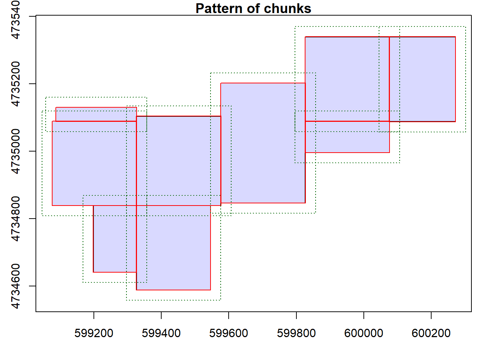
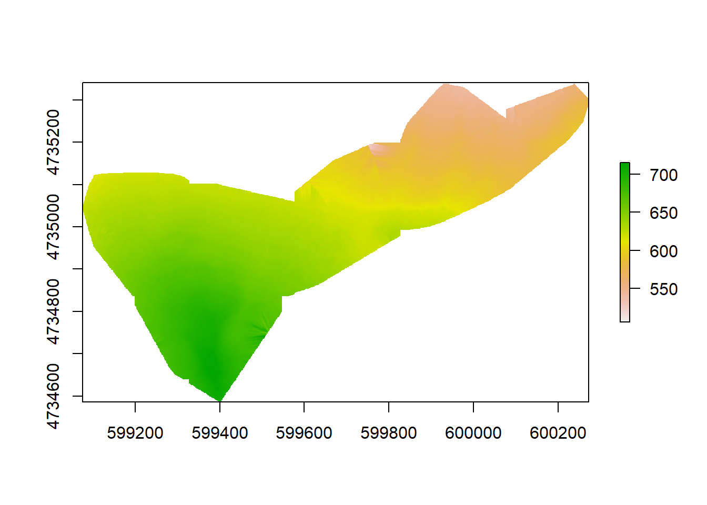
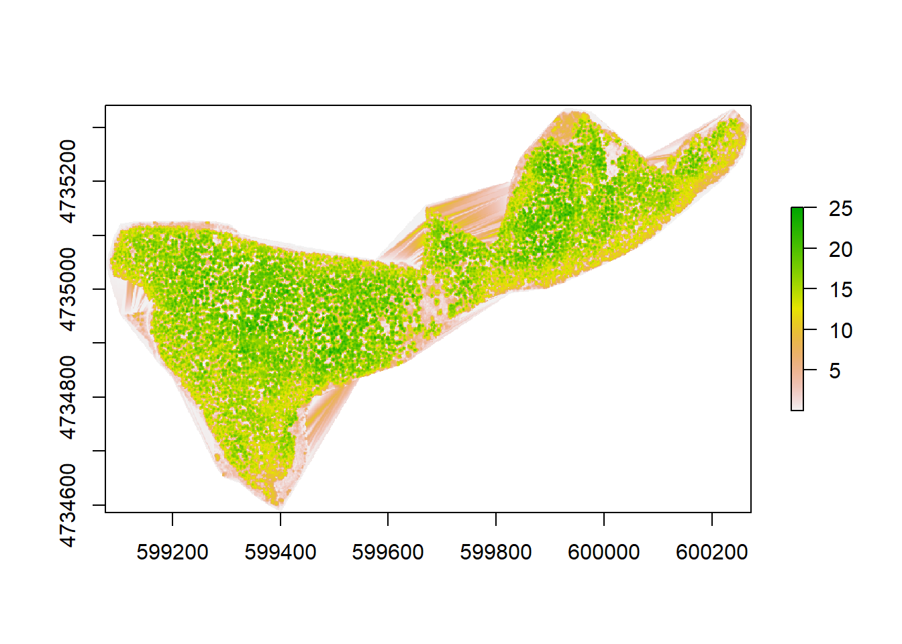
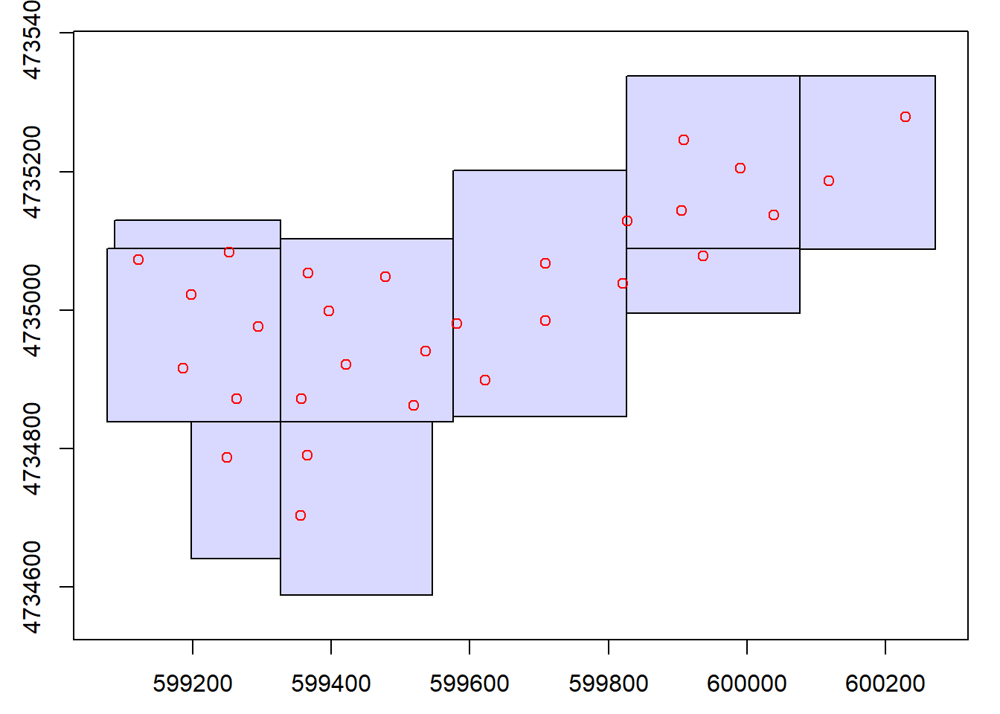
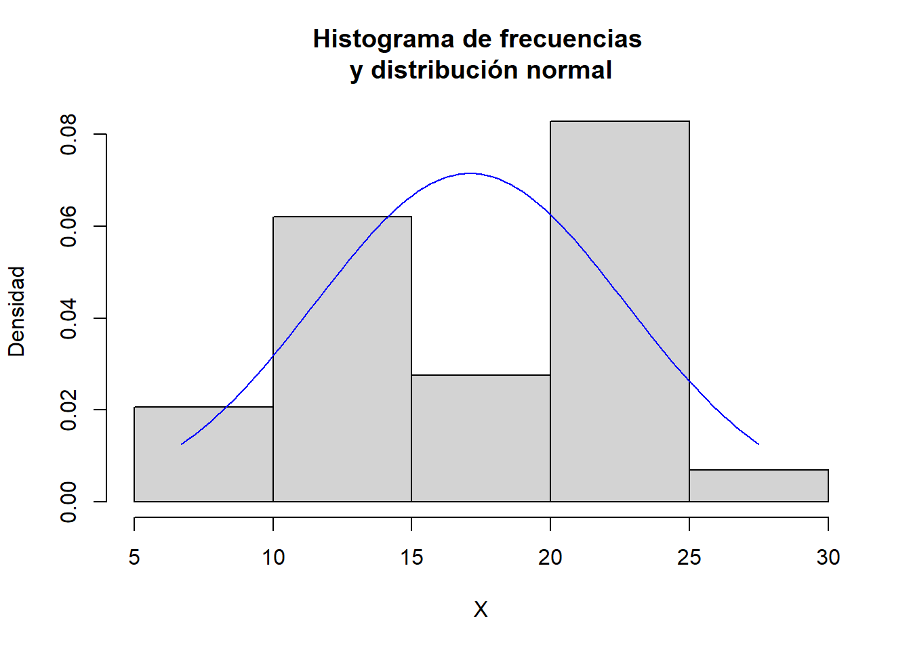
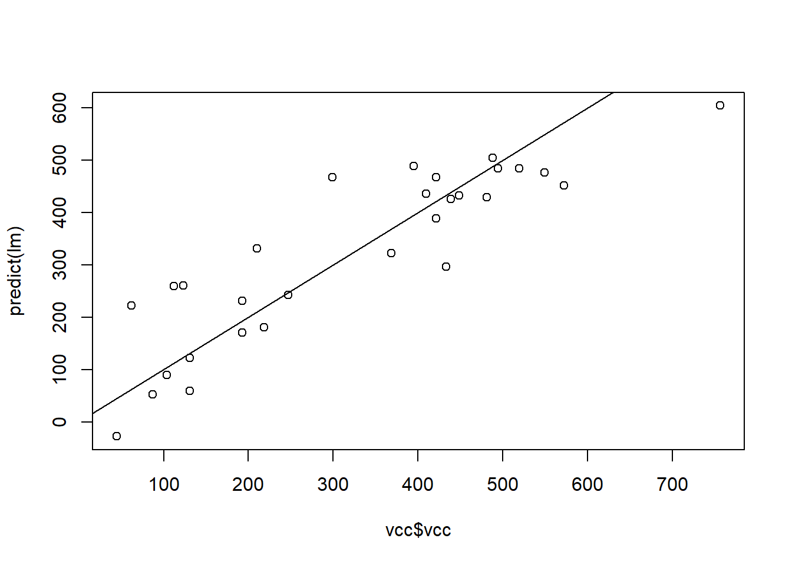
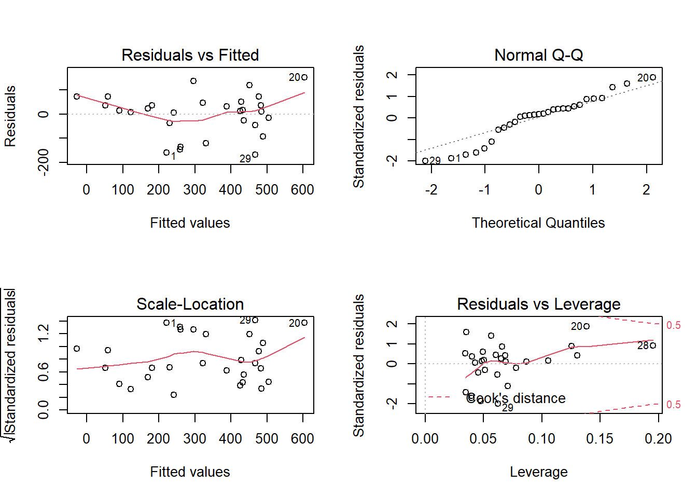
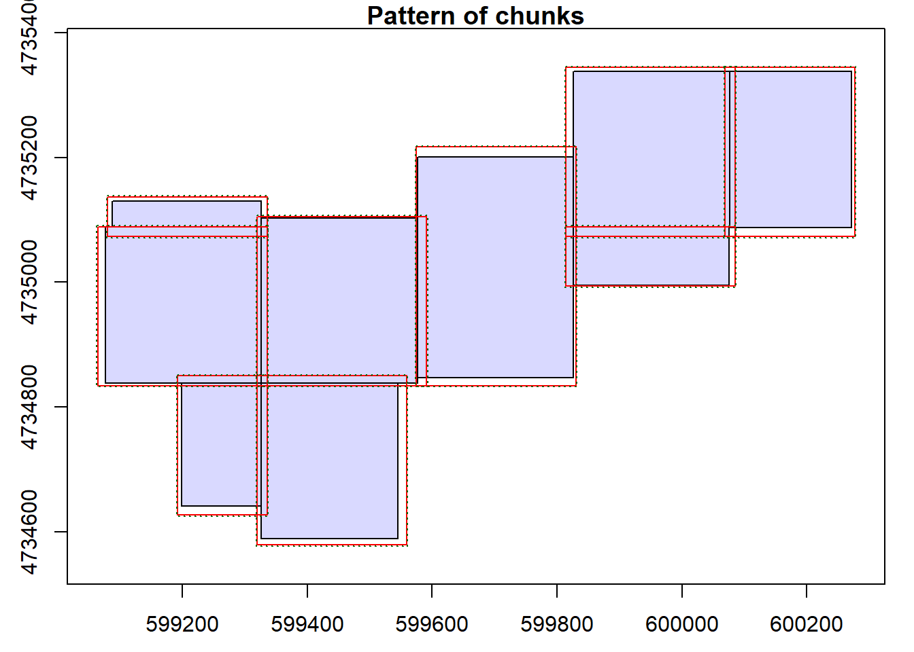
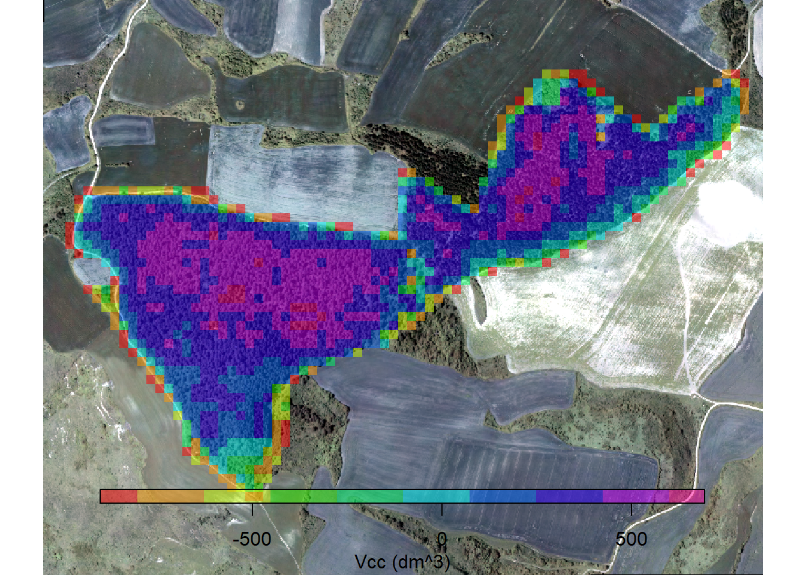

3 R y LiDAR
3.1 Preparación del entorno de trabajo
A lo largo de este manual haremos uso de varias librerías de R relativas al tratamiento de datos espacial, con especial atención a la librería lidR que sera la herramienta de cabecera. Dado que muchas puede ser que ya estén instaladas en tu computadora, usaremos un pequeño código que permite distinguir si ya lo está y si no es así, procede a instalarla de forma transparente para ti.
packages <- c("lidR", "sf", "sp", "rgdal", "dplyr", "skimr", "lmtest", "raster")
# Instalamos los paquetes que no estén instalados
installed_packages <- packages %in% rownames(installed.packages())
if (any(installed_packages == FALSE)) {
install.packages(packages[!installed_packages])
}
# Cargamos los paquetes
invisible(lapply(packages, library, character.only = TRUE))## Warning: package 'lidR' was built under R version 4.0.5## Warning: package 'raster' was built under R version 4.0.5## Warning: package 'sp' was built under R version 4.0.5## Warning: package 'sf' was built under R version 4.0.5## Warning: package 'rgdal' was built under R version 4.0.5## Warning: package 'dplyr' was built under R version 4.0.5## Warning: package 'skimr' was built under R version 4.0.5## Warning: package 'lmtest' was built under R version 4.0.5## Warning: package 'zoo' was built under R version 4.0.5A continuación crearemos una estructura de carpetas, predefinida, de forma que el trabajo sea lo más sistemático posible. Con ellas creadas, fijamos el directorio de trabajo y procedemos a descargar y descomprimir los datos LiDAR, vectoriales, raster y tabulares de los que disponemos del trabajo de campo y del vuelo LiDAR:
dir<-"c:/rlidar"
setwd(dir)
unlink(paste0(dir,"/temp/"), recursive=TRUE)
dir.create(paste0(dir,"/temp/"))
if (dir.exists(paste0(dir,"/data/"))){
print("ya existe el directorio ./data")
} else {
dir.create(dir.create(paste0(getwd(),"/data/")))
}
download.file("https://raw.githubusercontent.com/juliomsevilla/rlidar/main/data/lidar_data.zip",
destfile = paste0(dir, "/temp/lidar_data.zip"),
method = "curl", overwrite=TRUE)
unzip(paste0(dir, "/temp/lidar_data.zip"), exdir = "./temp")3.2 Limpieza y filtrado de los datos LiDAR
Para comenzar, si analizamos los tiles LiDAR, estos no vienen proyectados, por lo que procederemos a ello. Para hacerlo de forma rápida y automática usaremos una estructura de control for de forma que si previamente hemos listado todos los ficheros LiDAR a reproyectar, abriremos cada uno de ellos con readLAS()se les asigne la proyección que realmente tienen y se guarden con ella en la carpeta temp con writeLAS.
tiles <- list.files(paste0(dir, "/temp/tiles/"), full.names=TRUE)
dir.create(paste0(dir,"/temp/tiles_ref/"))
for (file in tiles) {
las<-readLAS(file)
epsg(las) <- 25830
writeLAS(las, paste0(dir, "/temp/tiles_ref/", basename(file)))
rm(las)
}## Warning: Invalid data: ScanAngleRank greater than 90 degrees
## Warning: Invalid data: ScanAngleRank greater than 90 degrees
## Warning: Invalid data: ScanAngleRank greater than 90 degrees
## Warning: Invalid data: ScanAngleRank greater than 90 degrees
## Warning: Invalid data: ScanAngleRank greater than 90 degrees
## Warning: Invalid data: ScanAngleRank greater than 90 degrees
## Warning: Invalid data: ScanAngleRank greater than 90 degrees
## Warning: Invalid data: ScanAngleRank greater than 90 degrees
## Warning: Invalid data: ScanAngleRank greater than 90 degreesLa librería lidR,para gestionar grandes cantidades de datos, usa un objeto LAScatalog de modo que el procesamiento de cada tesela LiDAR se hace de forma ordenada. El objeto LAScatalog en realidad contiene las referencias geográficas y cabeceras de los ficheros LiDAR que permite ubicar espacialmente y posteriormente aplicar la mayoría de las funciones de lidR como si se tratara de una sola nube de puntos cargada en la memoria de la computadora.
ctg <- readLAScatalog(paste0(dir, "/temp/tiles_ref/"))
ctg## class : LAScatalog (v1.2 format 3)
## extent : 599076.4, 600271.8, 4734589, 4735338 (xmin, xmax, ymin, ymax)
## coord. ref. : ETRS89 / UTM zone 30N
## area : 442139.4 m²
## points : 3.56million points
## density : 8.1 points/m²
## num. files : 9plot(ctg)
Una vez creado el objeto LAScatalog procedemos a su validación y estudio con el comando las_check:
las_check(ctg)##
## Checking headers consistency
## - Checking file version consistency...[0;32m <U+2713>[0m
## - Checking scale consistency...[0;32m <U+2713>[0m
## - Checking offset consistency...[0;32m <U+2713>[0m
## - Checking point type consistency...[0;32m <U+2713>[0m
## - Checking VLR consistency...[0;32m <U+2713>[0m
## - Checking CRS consistency...[0;32m <U+2713>[0m
## Checking the headers
## - Checking scale factor validity...[0;32m <U+2713>[0m
## - Checking Point Data Format ID validity...[0;32m <U+2713>[0m
## Checking preprocessing already done
## - Checking negative outliers...[0;32m <U+2713>[0m
## - Checking normalization...[0;31m no[0m
## Checking the geometry
## - Checking overlapping tiles...[0;32m <U+2713>[0m
## - Checking point indexation...[0;31m no[0m3.3 Clasificación de los retornos
La clasificación de los puntos terrestres es un paso importante en el procesamiento de datos de nubes de puntos. La distinción entre puntos de suelo y no permite crear un modelo digital del terreno que posteriormente nos permita normalizar los puntos LiDAR, esto es, pasar de altitudes respecto a un determinado nivel de referencia a alturas o cotas respecto a un cero, que, evidentemente, si hablamos de árboles es lo que más nos puede interesar.
Los datos del ejemplo ya vienen clasificados, pero los volveremos a clasificar para demostrar como lo efectúa la librería lidR. En concreto, esta librería usa dos formas de clasificación: pmf() (K. Zhang et al. 2003) y csf() (W. Zhang et al. 2016), cada uno con parámetros característicos que podremos modificar y es uno de los pasos más críticos y complejos del proceso.
Una vez que los puntos son clasificados, se asigna el valor de 2 al campo de clasificación del retorno, siguiendo las prescripciones que estandariza la Sociedad Americana de Fotogrametría y Teledetección (ASPRS) para los formatos LAS 1.1, 1.2, 1.3 y 1.4.1
opt_filter(ctg) <- "-drop-scan-angle '>=91'"
dir.create(paste0(dir,"/temp/tiles_class/"))
opt_output_files(ctg) <- paste0(dir,"/temp/tiles_class/", "{*}_class")
classified_ctg <- classify_ground(ctg, csf())3.4 Generación de los modelos digitales del terreno y de las elevaciones
Con la nube de puntos clasificada, al menos en puntos de suelo y no, calcularemos el modelo digital del terreno que posteriormente nos permita normalizar la nube de puntos.
La librería lidRpermite tres métodos de interpolación de los puntos del suelo con el comando grid_terrain: tin (red de triángulos irregulares), knnidw (distancia inversa ponderada) y kriging, de menor a mayor complejidad y uso de recursos en este orden.2
En nuestro caso, usamos kriging (lidR usa la librería gstat por si deseamos saber más sobre este método de interpolación probabilístico) porque los otros métodos no se pueden usar debido a los pocos puntos de suelo que tenemos. Si usamos algorithm =tin() por ejemplo, observaremos a un error del tipo convexhull debido a que los puntos de suelo con los que contamos en muchos casos están muy separados físicamente.
dir.create(paste0(dir,"/temp/mdt/"))
opt_output_files(classified_ctg) <- paste0(dir,"/temp/mdt/", "{*}_dtm")
dtm <- grid_terrain(classified_ctg, 1, algorithm = kriging(k = 40), overwrite=TRUE)## Warning: There were 12 degenerated ground points. Some X Y coordinates were
## repeated but with different Z coordinates. min Z were retained.## Warning in getProjectionRef(x, OVERRIDE_PROJ_DATUM_WITH_TOWGS84
## = OVERRIDE_PROJ_DATUM_WITH_TOWGS84, : Discarded datum
## European_Terrestrial_Reference_System_1989 in Proj4 definition: +proj=utm
## +zone=30 +ellps=GRS80 +towgs84=0,0,0,0,0,0,0 +units=m +no_defs## Warning in showSRID(SRS_string, format = "PROJ", multiline = "NO", prefer_proj
## = prefer_proj): Discarded datum European Terrestrial Reference System 1989 in
## Proj4 definition## Chunk 1 of 9 (11.1%): state <U+26A0>## Warning: There were 56 degenerated ground points. Some X Y coordinates were
## repeated but with different Z coordinates. min Z were retained.## Warning in getProjectionRef(x, OVERRIDE_PROJ_DATUM_WITH_TOWGS84
## = OVERRIDE_PROJ_DATUM_WITH_TOWGS84, : Discarded datum
## European_Terrestrial_Reference_System_1989 in Proj4 definition: +proj=utm
## +zone=30 +ellps=GRS80 +towgs84=0,0,0,0,0,0,0 +units=m +no_defs## Warning in showSRID(SRS_string, format = "PROJ", multiline = "NO", prefer_proj
## = prefer_proj): Discarded datum European Terrestrial Reference System 1989 in
## Proj4 definition## Chunk 2 of 9 (22.2%): state <U+26A0>## Warning: There were 38 degenerated ground points. Some X Y coordinates were
## repeated but with different Z coordinates. min Z were retained.## Warning in getProjectionRef(x, OVERRIDE_PROJ_DATUM_WITH_TOWGS84
## = OVERRIDE_PROJ_DATUM_WITH_TOWGS84, : Discarded datum
## European_Terrestrial_Reference_System_1989 in Proj4 definition: +proj=utm
## +zone=30 +ellps=GRS80 +towgs84=0,0,0,0,0,0,0 +units=m +no_defs## Warning in showSRID(SRS_string, format = "PROJ", multiline = "NO", prefer_proj
## = prefer_proj): Discarded datum European Terrestrial Reference System 1989 in
## Proj4 definition## Chunk 3 of 9 (33.3%): state <U+26A0>## Warning: There were 79 degenerated ground points. Some X Y coordinates were
## repeated but with different Z coordinates. min Z were retained.## Warning in getProjectionRef(x, OVERRIDE_PROJ_DATUM_WITH_TOWGS84
## = OVERRIDE_PROJ_DATUM_WITH_TOWGS84, : Discarded datum
## European_Terrestrial_Reference_System_1989 in Proj4 definition: +proj=utm
## +zone=30 +ellps=GRS80 +towgs84=0,0,0,0,0,0,0 +units=m +no_defs## Warning in showSRID(SRS_string, format = "PROJ", multiline = "NO", prefer_proj
## = prefer_proj): Discarded datum European Terrestrial Reference System 1989 in
## Proj4 definition## Chunk 4 of 9 (44.4%): state <U+26A0>## Warning: There were 1 degenerated ground points. Some X Y Z coordinates were
## repeated. They were removed.## Warning: There were 90 degenerated ground points. Some X Y coordinates were
## repeated but with different Z coordinates. min Z were retained.## Warning in getProjectionRef(x, OVERRIDE_PROJ_DATUM_WITH_TOWGS84
## = OVERRIDE_PROJ_DATUM_WITH_TOWGS84, : Discarded datum
## European_Terrestrial_Reference_System_1989 in Proj4 definition: +proj=utm
## +zone=30 +ellps=GRS80 +towgs84=0,0,0,0,0,0,0 +units=m +no_defs## Warning in showSRID(SRS_string, format = "PROJ", multiline = "NO", prefer_proj
## = prefer_proj): Discarded datum European Terrestrial Reference System 1989 in
## Proj4 definition## Chunk 5 of 9 (55.6%): state <U+26A0>## Warning: There were 21 degenerated ground points. Some X Y coordinates were
## repeated but with different Z coordinates. min Z were retained.## Warning in getProjectionRef(x, OVERRIDE_PROJ_DATUM_WITH_TOWGS84
## = OVERRIDE_PROJ_DATUM_WITH_TOWGS84, : Discarded datum
## European_Terrestrial_Reference_System_1989 in Proj4 definition: +proj=utm
## +zone=30 +ellps=GRS80 +towgs84=0,0,0,0,0,0,0 +units=m +no_defs## Warning in showSRID(SRS_string, format = "PROJ", multiline = "NO", prefer_proj
## = prefer_proj): Discarded datum European Terrestrial Reference System 1989 in
## Proj4 definition## Chunk 6 of 9 (66.7%): state <U+26A0>## Warning: There were 22 degenerated ground points. Some X Y coordinates were
## repeated but with different Z coordinates. min Z were retained.## Warning in getProjectionRef(x, OVERRIDE_PROJ_DATUM_WITH_TOWGS84
## = OVERRIDE_PROJ_DATUM_WITH_TOWGS84, : Discarded datum
## European_Terrestrial_Reference_System_1989 in Proj4 definition: +proj=utm
## +zone=30 +ellps=GRS80 +towgs84=0,0,0,0,0,0,0 +units=m +no_defs## Warning in showSRID(SRS_string, format = "PROJ", multiline = "NO", prefer_proj
## = prefer_proj): Discarded datum European Terrestrial Reference System 1989 in
## Proj4 definition## Chunk 7 of 9 (77.8%): state <U+26A0>## Warning: There were 9 degenerated ground points. Some X Y coordinates were
## repeated but with different Z coordinates. min Z were retained.## Warning in getProjectionRef(x, OVERRIDE_PROJ_DATUM_WITH_TOWGS84
## = OVERRIDE_PROJ_DATUM_WITH_TOWGS84, : Discarded datum
## European_Terrestrial_Reference_System_1989 in Proj4 definition: +proj=utm
## +zone=30 +ellps=GRS80 +towgs84=0,0,0,0,0,0,0 +units=m +no_defs## Warning in showSRID(SRS_string, format = "PROJ", multiline = "NO", prefer_proj
## = prefer_proj): Discarded datum European Terrestrial Reference System 1989 in
## Proj4 definition## Chunk 8 of 9 (88.9%): state <U+26A0>## Warning: There were 6 degenerated ground points. Some X Y coordinates were
## repeated but with different Z coordinates. min Z were retained.## Warning in getProjectionRef(x, OVERRIDE_PROJ_DATUM_WITH_TOWGS84
## = OVERRIDE_PROJ_DATUM_WITH_TOWGS84, : Discarded datum
## European_Terrestrial_Reference_System_1989 in Proj4 definition: +proj=utm
## +zone=30 +ellps=GRS80 +towgs84=0,0,0,0,0,0,0 +units=m +no_defs## Warning in showSRID(SRS_string, format = "PROJ", multiline = "NO", prefer_proj
## = prefer_proj): Discarded datum European Terrestrial Reference System 1989 in
## Proj4 definition## Chunk 9 of 9 (100%): state <U+26A0>## Warning in showSRID(SRS_string, format = "PROJ", multiline = "NO", prefer_proj
## = prefer_proj): Discarded datum European Terrestrial Reference System 1989 in
## Proj4 definition
## Warning in showSRID(SRS_string, format = "PROJ", multiline = "NO", prefer_proj
## = prefer_proj): Discarded datum European Terrestrial Reference System 1989 in
## Proj4 definition
dtm## class : RasterLayer
## dimensions : 751, 1196, 898196 (nrow, ncol, ncell)
## resolution : 1, 1 (x, y)
## extent : 599076, 600272, 4734588, 4735339 (xmin, xmax, ymin, ymax)
## crs : +proj=utm +zone=30 +ellps=GRS80 +units=m +no_defs
## source : grid_terrain.vrt
## names : tile_1_dtm
## values : 506.2, 715.4 (min, max)plot(dtm)
3.5 Normalización
# Normalizamos los datos y creamos el modelo digital de elevaciones normalizado
dir.create(paste0(dir,"/temp/tiles_norm/"))
opt_output_files(classified_ctg) <- paste0(dir,"/temp/tiles_norm/", "{*}_norm")
ctg_norm <- normalize_height(classified_ctg, dtm)## Warning: Invalid data: ScanAngleRank greater than 90 degrees## Chunk 1 of 9 (11.1%): state <U+26A0>## Warning: Invalid data: ScanAngleRank greater than 90 degrees## Chunk 2 of 9 (22.2%): state <U+26A0>## Warning: Invalid data: ScanAngleRank greater than 90 degrees## Chunk 3 of 9 (33.3%): state <U+26A0>## Warning: Invalid data: ScanAngleRank greater than 90 degrees## Chunk 4 of 9 (44.4%): state <U+26A0>## Warning: Invalid data: ScanAngleRank greater than 90 degrees## Chunk 5 of 9 (55.6%): state <U+26A0>## Warning: Invalid data: ScanAngleRank greater than 90 degrees## Chunk 6 of 9 (66.7%): state <U+26A0>## Warning: Invalid data: ScanAngleRank greater than 90 degrees## Chunk 7 of 9 (77.8%): state <U+26A0>## Warning: Invalid data: ScanAngleRank greater than 90 degrees## Chunk 8 of 9 (88.9%): state <U+26A0>## Warning: Invalid data: ScanAngleRank greater than 90 degrees## Chunk 9 of 9 (100%): state <U+26A0>las_check(ctg_norm)##
## Checking headers consistency
## - Checking file version consistency...[0;32m <U+2713>[0m
## - Checking scale consistency...[0;32m <U+2713>[0m
## - Checking offset consistency...[0;32m <U+2713>[0m
## - Checking point type consistency...[0;32m <U+2713>[0m
## - Checking VLR consistency...[0;32m <U+2713>[0m
## - Checking CRS consistency...[0;32m <U+2713>[0m
## Checking the headers
## - Checking scale factor validity...[0;32m <U+2713>[0m
## - Checking Point Data Format ID validity...[0;32m <U+2713>[0m
## Checking preprocessing already done
## - Checking negative outliers...
## [1;33m <U+26A0> 9 file(s) with points below 0[0m
## - Checking normalization...[0;31m no[0m
## Checking the geometry
## - Checking overlapping tiles...[0;32m <U+2713>[0m
## - Checking point indexation...[0;31m no[0mdir.create(paste0(dir,"/temp/mds/"))
opt_filter(ctg_norm) <- "-drop_z_below 0" # Ignoramos los puntos con cota por debajo de cero
opt_output_files(ctg_norm) <- paste0(dir,"/temp/mds/", "{*}_mds")
mds <- grid_canopy(ctg_norm, 1, pitfree(c(0,2,5,10,15), c(0,1), subcircle = 0.2))## Warning in getProjectionRef(x, OVERRIDE_PROJ_DATUM_WITH_TOWGS84
## = OVERRIDE_PROJ_DATUM_WITH_TOWGS84, : Discarded datum
## European_Terrestrial_Reference_System_1989 in Proj4 definition: +proj=utm
## +zone=30 +ellps=GRS80 +towgs84=0,0,0,0,0,0,0 +units=m +no_defs## Warning in showSRID(SRS_string, format = "PROJ", multiline = "NO", prefer_proj
## = prefer_proj): Discarded datum European Terrestrial Reference System 1989 in
## Proj4 definition## Chunk 1 of 9 (11.1%): state <U+26A0>## Warning in getProjectionRef(x, OVERRIDE_PROJ_DATUM_WITH_TOWGS84
## = OVERRIDE_PROJ_DATUM_WITH_TOWGS84, : Discarded datum
## European_Terrestrial_Reference_System_1989 in Proj4 definition: +proj=utm
## +zone=30 +ellps=GRS80 +towgs84=0,0,0,0,0,0,0 +units=m +no_defs
## Warning in getProjectionRef(x, OVERRIDE_PROJ_DATUM_WITH_TOWGS84 =
## OVERRIDE_PROJ_DATUM_WITH_TOWGS84, : Discarded datum European Terrestrial
## Reference System 1989 in Proj4 definition## Chunk 2 of 9 (22.2%): state <U+26A0>## Warning in getProjectionRef(x, OVERRIDE_PROJ_DATUM_WITH_TOWGS84
## = OVERRIDE_PROJ_DATUM_WITH_TOWGS84, : Discarded datum
## European_Terrestrial_Reference_System_1989 in Proj4 definition: +proj=utm
## +zone=30 +ellps=GRS80 +towgs84=0,0,0,0,0,0,0 +units=m +no_defs
## Warning in getProjectionRef(x, OVERRIDE_PROJ_DATUM_WITH_TOWGS84 =
## OVERRIDE_PROJ_DATUM_WITH_TOWGS84, : Discarded datum European Terrestrial
## Reference System 1989 in Proj4 definition## Chunk 3 of 9 (33.3%): state <U+26A0>## Warning in getProjectionRef(x, OVERRIDE_PROJ_DATUM_WITH_TOWGS84
## = OVERRIDE_PROJ_DATUM_WITH_TOWGS84, : Discarded datum
## European_Terrestrial_Reference_System_1989 in Proj4 definition: +proj=utm
## +zone=30 +ellps=GRS80 +towgs84=0,0,0,0,0,0,0 +units=m +no_defs
## Warning in getProjectionRef(x, OVERRIDE_PROJ_DATUM_WITH_TOWGS84 =
## OVERRIDE_PROJ_DATUM_WITH_TOWGS84, : Discarded datum European Terrestrial
## Reference System 1989 in Proj4 definition## Chunk 4 of 9 (44.4%): state <U+26A0>## Warning in getProjectionRef(x, OVERRIDE_PROJ_DATUM_WITH_TOWGS84
## = OVERRIDE_PROJ_DATUM_WITH_TOWGS84, : Discarded datum
## European_Terrestrial_Reference_System_1989 in Proj4 definition: +proj=utm
## +zone=30 +ellps=GRS80 +towgs84=0,0,0,0,0,0,0 +units=m +no_defs
## Warning in getProjectionRef(x, OVERRIDE_PROJ_DATUM_WITH_TOWGS84 =
## OVERRIDE_PROJ_DATUM_WITH_TOWGS84, : Discarded datum European Terrestrial
## Reference System 1989 in Proj4 definition## Chunk 5 of 9 (55.6%): state <U+26A0>## Warning in getProjectionRef(x, OVERRIDE_PROJ_DATUM_WITH_TOWGS84
## = OVERRIDE_PROJ_DATUM_WITH_TOWGS84, : Discarded datum
## European_Terrestrial_Reference_System_1989 in Proj4 definition: +proj=utm
## +zone=30 +ellps=GRS80 +towgs84=0,0,0,0,0,0,0 +units=m +no_defs
## Warning in getProjectionRef(x, OVERRIDE_PROJ_DATUM_WITH_TOWGS84 =
## OVERRIDE_PROJ_DATUM_WITH_TOWGS84, : Discarded datum European Terrestrial
## Reference System 1989 in Proj4 definition## Chunk 6 of 9 (66.7%): state <U+26A0>## Warning in getProjectionRef(x, OVERRIDE_PROJ_DATUM_WITH_TOWGS84
## = OVERRIDE_PROJ_DATUM_WITH_TOWGS84, : Discarded datum
## European_Terrestrial_Reference_System_1989 in Proj4 definition: +proj=utm
## +zone=30 +ellps=GRS80 +towgs84=0,0,0,0,0,0,0 +units=m +no_defs
## Warning in getProjectionRef(x, OVERRIDE_PROJ_DATUM_WITH_TOWGS84 =
## OVERRIDE_PROJ_DATUM_WITH_TOWGS84, : Discarded datum European Terrestrial
## Reference System 1989 in Proj4 definition## Chunk 7 of 9 (77.8%): state <U+26A0>## Warning in getProjectionRef(x, OVERRIDE_PROJ_DATUM_WITH_TOWGS84
## = OVERRIDE_PROJ_DATUM_WITH_TOWGS84, : Discarded datum
## European_Terrestrial_Reference_System_1989 in Proj4 definition: +proj=utm
## +zone=30 +ellps=GRS80 +towgs84=0,0,0,0,0,0,0 +units=m +no_defs
## Warning in getProjectionRef(x, OVERRIDE_PROJ_DATUM_WITH_TOWGS84 =
## OVERRIDE_PROJ_DATUM_WITH_TOWGS84, : Discarded datum European Terrestrial
## Reference System 1989 in Proj4 definition## Chunk 8 of 9 (88.9%): state <U+26A0>## Warning in getProjectionRef(x, OVERRIDE_PROJ_DATUM_WITH_TOWGS84
## = OVERRIDE_PROJ_DATUM_WITH_TOWGS84, : Discarded datum
## European_Terrestrial_Reference_System_1989 in Proj4 definition: +proj=utm
## +zone=30 +ellps=GRS80 +towgs84=0,0,0,0,0,0,0 +units=m +no_defs
## Warning in getProjectionRef(x, OVERRIDE_PROJ_DATUM_WITH_TOWGS84 =
## OVERRIDE_PROJ_DATUM_WITH_TOWGS84, : Discarded datum European Terrestrial
## Reference System 1989 in Proj4 definition## Chunk 9 of 9 (100%): state <U+26A0>## Warning in showSRID(SRS_string, format = "PROJ", multiline = "NO", prefer_proj
## = prefer_proj): Discarded datum European Terrestrial Reference System 1989 in
## Proj4 definition
## Warning in showSRID(SRS_string, format = "PROJ", multiline = "NO", prefer_proj
## = prefer_proj): Discarded datum European Terrestrial Reference System 1989 in
## Proj4 definitionplot(mds)
3.6 Recorte de las parcelas de campo en la nube de puntos LiDAR y cálculo de los estadísticos descriptivos
Para comenzar cargaremos los puntos de muestreo efectuados en campo:
opt_filter(ctg_norm) <- "-drop_z_below 0"
plots <- st_read("./temp/parc.shp")## Reading layer `parc' from data source `C:\rlidar\temp\parc.shp' using driver `ESRI Shapefile'
## Simple feature collection with 29 features and 3 fields
## Geometry type: POINT
## Dimension: XY
## Bounding box: xmin: 599121.6 ymin: 4734703 xmax: 600228.6 ymax: 4735279
## Projected CRS: ETRS89 / UTM zone 30Nrodal <- st_read("./temp/rodal.shp")## Reading layer `rodal' from data source `C:\rlidar\temp\rodal.shp' using driver `ESRI Shapefile'
## Simple feature collection with 1 feature and 1 field
## Geometry type: POLYGON
## Dimension: XY
## Bounding box: xmin: 599076.4 ymin: 4734589 xmax: 600271.9 ymax: 4735338
## Projected CRS: ETRS89 / UTM zone 30Nplots## Simple feature collection with 29 features and 3 fields
## Geometry type: POINT
## Dimension: XY
## Bounding box: xmin: 599121.6 ymin: 4734703 xmax: 600228.6 ymax: 4735279
## Projected CRS: ETRS89 / UTM zone 30N
## First 10 features:
## id X Y geometry
## 1 1 599121.6 4735073 POINT (599121.6 4735073)
## 2 2 599249.4 4734787 POINT (599249.4 4734787)
## 3 3 599820.8 4735038 POINT (599820.8 4735038)
## 4 4 600038.5 4735137 POINT (600038.5 4735137)
## 5 5 599709.0 4735068 POINT (599709 4735068)
## 6 6 599263.3 4734872 POINT (599263.3 4734872)
## 7 7 599186.1 4734916 POINT (599186.1 4734916)
## 8 8 600118.0 4735187 POINT (600118 4735187)
## 9 9 599827.7 4735129 POINT (599827.7 4735129)
## 10 10 599478.4 4735048 POINT (599478.4 4735048)plot(ctg)
plot(plots, add = TRUE, col="red")## Warning in plot.sf(plots, add = TRUE, col = "red"): ignoring all but the first
## attribute
Para recortar estas parcelas de la nube de puntos podemos usar el comando plot_metrics (además guardaremos estos recortes para su uso futuro):
tiles_norm <- list.files(paste0(dir, "/temp/tiles_norm/"), full.names = TRUE, pattern = "(.*)norm.las$")
ctg_norm <- readLAScatalog(tiles_norm)stats <- plot_metrics(ctg_norm, .stdmetrics_z, plots, radius = 9)## Chunk 1 of 29 (3.4%): state <U+2713>
## Chunk 2 of 29 (6.9%): state <U+2713>
## Chunk 3 of 29 (10.3%): state <U+2713>
## Chunk 4 of 29 (13.8%): state <U+2713>
## Chunk 5 of 29 (17.2%): state <U+2713>
## Chunk 6 of 29 (20.7%): state <U+2713>
## Chunk 7 of 29 (24.1%): state <U+2713>
## Chunk 8 of 29 (27.6%): state <U+2713>
## Chunk 9 of 29 (31%): state <U+2713>
## Chunk 10 of 29 (34.5%): state <U+2713>
## Chunk 11 of 29 (37.9%): state <U+2713>
## Chunk 12 of 29 (41.4%): state <U+2713>
## Chunk 13 of 29 (44.8%): state <U+2713>
## Chunk 14 of 29 (48.3%): state <U+2713>
## Chunk 15 of 29 (51.7%): state <U+2713>
## Chunk 16 of 29 (55.2%): state <U+2713>
## Chunk 17 of 29 (58.6%): state <U+2713>
## Chunk 18 of 29 (62.1%): state <U+2713>
## Chunk 19 of 29 (65.5%): state <U+2713>
## Chunk 20 of 29 (69%): state <U+2713>
## Chunk 21 of 29 (72.4%): state <U+2713>
## Chunk 22 of 29 (75.9%): state <U+2713>
## Chunk 23 of 29 (79.3%): state <U+2713>
## Chunk 24 of 29 (82.8%): state <U+2713>
## Chunk 25 of 29 (86.2%): state <U+2713>
## Chunk 26 of 29 (89.7%): state <U+2713>
## Chunk 27 of 29 (93.1%): state <U+2713>
## Chunk 28 of 29 (96.6%): state <U+2713>
## Chunk 29 of 29 (100%): state <U+2713>head(stats)## Simple feature collection with 6 features and 39 fields
## Geometry type: POINT
## Dimension: XY
## Bounding box: xmin: 599121.6 ymin: 4734787 xmax: 600038.5 ymax: 4735137
## Projected CRS: ETRS89 / UTM zone 30N
## id X Y zmax zmean zsd zskew zkurt zentropy
## 1 1 599121.6 4735073 18.63 6.782145 6.378730 0.33117224 1.314945 NA
## 2 2 599249.4 4734787 16.56 6.864536 6.042658 0.02658273 1.194349 NA
## 3 3 599820.8 4735038 17.21 8.779583 5.659351 -0.37608105 1.428980 NA
## 4 4 600038.5 4735137 18.94 7.673064 6.676257 -0.02836398 1.193459 NA
## 5 5 599709.0 4735068 20.95 8.741759 7.279909 -0.04818947 1.180898 NA
## 6 6 599263.3 4734872 19.18 7.108978 6.759415 0.18350439 1.283135 NA
## pzabovezmean pzabove2 zq5 zq10 zq15 zq20 zq25 zq30 zq35 zq40 zq45
## 1 43.23607 56.91550 -0.010 0.24 0.58 0.810 1.040 1.270 1.4900 1.822 2.160
## 2 51.38070 56.87248 -0.100 -0.01 0.06 0.184 0.575 0.920 1.2670 1.610 2.337
## 3 62.44883 78.34016 0.430 1.00 1.45 1.850 2.270 2.770 3.3510 9.764 10.620
## 4 51.83688 60.24982 -0.090 -0.01 0.06 0.160 0.360 0.640 1.1335 2.084 4.089
## 5 52.07767 60.03883 0.030 0.26 0.52 0.790 0.990 1.212 1.4800 2.016 5.799
## 6 47.22314 58.52777 -0.079 -0.03 0.00 0.020 0.050 0.150 0.7570 1.620 2.989
## zq50 zq55 zq60 zq65 zq70 zq75 zq80 zq85 zq90 zq95
## 1 2.750 4.1480 11.030 12.094 12.83 13.43 14.148 14.740 15.490 16.2320
## 2 8.210 10.2430 11.380 11.963 12.36 12.74 13.170 13.660 14.178 14.8190
## 3 11.280 11.9100 12.336 12.760 13.09 13.58 14.040 14.491 14.954 15.4440
## 4 11.045 12.0255 12.540 12.930 13.40 13.90 14.418 15.000 15.609 16.2995
## 5 11.710 13.5500 14.294 14.941 15.39 15.73 16.120 16.499 16.940 17.9260
## 6 4.400 10.3220 11.740 12.530 13.12 13.83 14.406 15.057 16.000 16.8900
## zpcum1 zpcum2 zpcum3 zpcum4 zpcum5 zpcum6 zpcum7 zpcum8
## 1 37.46998 51.24099 54.20336 54.36349 54.36349 58.40673 70.41633 85.10809
## 2 32.71454 39.92995 40.77058 41.75131 43.81786 47.60070 56.18214 77.93345
## 3 15.72303 33.66488 35.57766 35.57766 35.65417 42.00459 55.47054 76.58761
## 4 31.36929 36.97095 40.99585 41.49378 41.49378 45.10373 64.39834 84.56432
## 5 37.76876 41.37931 43.16430 45.07099 47.50507 49.08722 61.37931 87.54564
## 6 29.06931 37.62376 42.69307 43.24752 44.67327 50.65347 66.45545 84.07921
## zpcum9 geometry
## 1 97.59808 POINT (599121.6 4735073)
## 2 94.85114 POINT (599249.4 4734787)
## 3 95.25631 POINT (599820.8 4735038)
## 4 98.21577 POINT (600038.5 4735137)
## 5 98.58012 POINT (599709 4735068)
## 6 95.40594 POINT (599263.3 4734872)3.7 Ajuste de los modelos de transición por estrato
Cargamos los datos medidos en las parcelas y se lo añadimos a los datos lidar. A continuación realizamos un análisis de correlación entre las variables de la nube de puntos y la futura variable dependiente (en este caso vcc).
Se define por correlación a la dirección y magnitud de la asociación entre dos variables cuantitativas, es decir que grado de relación hay entre ellas y si el aumento o disminución de una provoca el aumento o disminución de la otra.
El grado de correlación se mide mediante dos coeficientes: el coeficiente de correlación de Pearson y el coeficiente de correlación de Spearman, análogos en significado pero disimiles en su aplicación.
El coeficiente de correlación de Pearson es un coeficiente adimensional que va fluctúa entre -1 y +1, donde el primer valor indica la existencia de una asociación perfecta en sentido decreciente y el segundo en sentido creciente. Evidentemente, el valor cero, indica la inexistencia de relación.
El coeficiente de correlación de Pearson (a veces conocido como coeficiente de correlación a secas) es aplicable para variables cuantitativas que se relacionan de forma lineal. Por otro lado, el coeficiente de correlación de Spearman, es un evaluador de correlación, homólogo en su valor (-1 a +1) al de Pearson, pero con un carácter no paramétrico, lo que implica que la relación entre las variables puede no ser lineal, que no es tan exigente en la existencia de normalidad en la población y aplicable incluso a variables ordinales.
Centrándonos en el coeficiente de correlación de Pearson, dado que tratamos variables cuantitativas, empezamos cargando los datos de volumenes de las parcelas de muestreo, pasando posteriormente a unirlas a la tabla con los estadísticos descriptivos de la nube de puntos de esas parcelas obtenido anteriormente. Para finalizar mostramos las seis variables más relacionadas con la futura variable dependiente.
vcc <- readxl::read_excel(paste0(dir,"/temp/muestreo.xlsx"))
head(vcc)## # A tibble: 6 x 2
## parc vcc
## <dbl> <dbl>
## 1 1 61.9
## 2 2 131.
## 3 3 218.
## 4 4 193.
## 5 5 210.
## 6 6 123.vcc <- left_join(vcc, stats, by = c("parc" = "id"))
df <- vcc %>%
select(-c(parc, X, Y, geometry))%>%
cor()%>%
data.frame()%>%
add_rownames(var = "lidar_stat")%>%
filter(lidar_stat!='vcc')%>%
arrange(desc(vcc))## Warning: `add_rownames()` was deprecated in dplyr 1.0.0.
## Please use `tibble::rownames_to_column()` instead.
## This warning is displayed once every 8 hours.
## Call `lifecycle::last_lifecycle_warnings()` to see where this warning was generated.head(df, 3)## # A tibble: 3 x 38
## lidar_stat vcc zmax zmean zsd zskew zkurt zentropy pzabovezmean
## <chr> <dbl> <dbl> <dbl> <dbl> <dbl> <dbl> <dbl> <dbl>
## 1 zq90 0.887 0.947 0.804 0.915 -0.494 -0.355 NA 0.413
## 2 zq95 0.884 0.957 0.788 0.905 -0.455 -0.304 NA 0.380
## 3 zq85 0.882 0.933 0.829 0.920 -0.560 -0.435 NA 0.473
## # ... with 29 more variables: pzabove2 <dbl>, zq5 <dbl>, zq10 <dbl>,
## # zq15 <dbl>, zq20 <dbl>, zq25 <dbl>, zq30 <dbl>, zq35 <dbl>, zq40 <dbl>,
## # zq45 <dbl>, zq50 <dbl>, zq55 <dbl>, zq60 <dbl>, zq65 <dbl>, zq70 <dbl>,
## # zq75 <dbl>, zq80 <dbl>, zq85 <dbl>, zq90 <dbl>, zq95 <dbl>, zpcum1 <dbl>,
## # zpcum2 <dbl>, zpcum3 <dbl>, zpcum4 <dbl>, zpcum5 <dbl>, zpcum6 <dbl>,
## # zpcum7 <dbl>, zpcum8 <dbl>, zpcum9 <dbl>tail(df, 3)## # A tibble: 3 x 38
## lidar_stat vcc zmax zmean zsd zskew zkurt zentropy pzabovezmean
## <chr> <dbl> <dbl> <dbl> <dbl> <dbl> <dbl> <dbl> <dbl>
## 1 zpcum6 -0.563 -0.562 -0.821 -0.617 0.912 0.646 NA -0.888
## 2 zpcum7 -0.631 -0.433 -0.663 -0.635 0.657 0.612 NA -0.585
## 3 zentropy NA NA NA NA NA NA 1 NA
## # ... with 29 more variables: pzabove2 <dbl>, zq5 <dbl>, zq10 <dbl>,
## # zq15 <dbl>, zq20 <dbl>, zq25 <dbl>, zq30 <dbl>, zq35 <dbl>, zq40 <dbl>,
## # zq45 <dbl>, zq50 <dbl>, zq55 <dbl>, zq60 <dbl>, zq65 <dbl>, zq70 <dbl>,
## # zq75 <dbl>, zq80 <dbl>, zq85 <dbl>, zq90 <dbl>, zq95 <dbl>, zpcum1 <dbl>,
## # zpcum2 <dbl>, zpcum3 <dbl>, zpcum4 <dbl>, zpcum5 <dbl>, zpcum6 <dbl>,
## # zpcum7 <dbl>, zpcum8 <dbl>, zpcum9 <dbl>Analizamos la variable dependiente
skim(vcc$vcc)| Name | vcc$vcc |
| Number of rows | 29 |
| Number of columns | 1 |
| _______________________ | |
| Column type frequency: | |
| numeric | 1 |
| ________________________ | |
| Group variables | None |
Variable type: numeric
| skim_variable | n_missing | complete_rate | mean | sd | p0 | p25 | p50 | p75 | p100 | hist |
|---|---|---|---|---|---|---|---|---|---|---|
| data | 0 | 1 | 322.4 | 185.88 | 44.69 | 131.24 | 368.46 | 448.67 | 756.03 | ▇▆▇▆▁ |
shapiro.test(vcc$vcc)##
## Shapiro-Wilk normality test
##
## data: vcc$vcc
## W = 0.94038, p-value = 0.1026plotn <- function(x,main="Histograma de frecuencias \ny distribución normal",
xlab="X",ylab="Densidad") {
min <- min(x)
max <- max(x)
media <- mean(x)
dt <- sd(x)
hist(x,freq=F,main=main,xlab=xlab,ylab=ylab)
curve(dnorm(x,media,dt), min, max,add = T,col="blue")
}
plotn(sqrt(vcc$vcc))
Construimos el modelo
lm<-lm(vcc~zq90, data=vcc)
summary(lm)##
## Call:
## lm(formula = vcc ~ zq90, data = vcc)
##
## Residuals:
## Min 1Q Median 3Q Max
## -168.67 -37.87 13.77 46.15 152.18
##
## Coefficients:
## Estimate Std. Error t value Pr(>|t|)
## (Intercept) -950.723 128.282 -7.411 5.68e-08 ***
## zq90 75.685 7.565 10.005 1.41e-10 ***
## ---
## Signif. codes: 0 '***' 0.001 '**' 0.01 '*' 0.05 '.' 0.1 ' ' 1
##
## Residual standard error: 87.25 on 27 degrees of freedom
## Multiple R-squared: 0.7876, Adjusted R-squared: 0.7797
## F-statistic: 100.1 on 1 and 27 DF, p-value: 1.406e-10plot(vcc$vcc, predict(lm))
abline(0,1)
par(mfrow=c(2,2))
plot(lm)
par(mfrow=c(1,1))
shapiro.test(residuals(lm))##
## Shapiro-Wilk normality test
##
## data: residuals(lm)
## W = 0.93756, p-value = 0.08655bptest(lm)##
## studentized Breusch-Pagan test
##
## data: lm
## BP = 0.66598, df = 1, p-value = 0.41453.8 Cálculo de los estadísticos descriptivos LiDAR en todo el monte
Calculamos los estadísticos de los recintos. El radio de nuestras parcelas es de 9 metros, por lo que la superficie es de 254.469004941 m2 y esto implica una resolución de 15.95208
pixel <- sqrt(pi*9^2)
metrics <- grid_metrics(ctg_norm, .stdmetrics_z, res = pixel)## Warning: Invalid data: ScanAngleRank greater than 90 degrees## Warning in min(x): ningún argumento finito para min; retornando Inf## Warning in max(x): ningun argumento finito para max; retornando -Inf## Warning in min(x, na.rm = TRUE): ningún argumento finito para min; retornando
## Inf## Warning in max(x, na.rm = TRUE): ningun argumento finito para max; retornando
## -Inf## Chunk 1 of 9 (11.1%): state <U+26A0>## Warning: Invalid data: ScanAngleRank greater than 90 degrees## Warning in min(x, na.rm = TRUE): ningún argumento finito para min; retornando
## Inf## Warning in max(x, na.rm = TRUE): ningun argumento finito para max; retornando
## -Inf## Chunk 2 of 9 (22.2%): state <U+26A0>## Warning: Invalid data: ScanAngleRank greater than 90 degrees## Warning in min(x): ningún argumento finito para min; retornando Inf## Warning in max(x): ningun argumento finito para max; retornando -Inf## Warning in min(x, na.rm = TRUE): ningún argumento finito para min; retornando
## Inf## Warning in max(x, na.rm = TRUE): ningun argumento finito para max; retornando
## -Inf## Chunk 3 of 9 (33.3%): state <U+26A0>## Warning: Invalid data: ScanAngleRank greater than 90 degrees## Warning in min(x): ningún argumento finito para min; retornando Inf## Warning in max(x): ningun argumento finito para max; retornando -Inf## Warning in min(x, na.rm = TRUE): ningún argumento finito para min; retornando
## Inf## Warning in max(x, na.rm = TRUE): ningun argumento finito para max; retornando
## -Inf## Chunk 4 of 9 (44.4%): state <U+26A0>## Warning: Invalid data: ScanAngleRank greater than 90 degrees## Chunk 5 of 9 (55.6%): state <U+26A0>## Warning: Invalid data: ScanAngleRank greater than 90 degrees## Chunk 6 of 9 (66.7%): state <U+26A0>## Warning: Invalid data: ScanAngleRank greater than 90 degrees## Chunk 7 of 9 (77.8%): state <U+26A0>## Warning: Invalid data: ScanAngleRank greater than 90 degrees## Warning in min(x): ningún argumento finito para min; retornando Inf## Warning in max(x): ningun argumento finito para max; retornando -Inf## Warning in min(x, na.rm = TRUE): ningún argumento finito para min; retornando
## Inf## Warning in max(x, na.rm = TRUE): ningun argumento finito para max; retornando
## -Inf## Chunk 8 of 9 (88.9%): state <U+26A0>## Warning: Invalid data: ScanAngleRank greater than 90 degrees## Warning in min(x): ningún argumento finito para min; retornando Inf## Warning in max(x): ningun argumento finito para max; retornando -Inf## Warning in min(x, na.rm = TRUE): ningún argumento finito para min; retornando
## Inf## Warning in max(x, na.rm = TRUE): ningun argumento finito para max; retornando
## -Inf
## Chunk 9 of 9 (100%): state <U+26A0>#plot(metrics$zq90)3.9 Aplicación de los modelos de transición
vcc_pred <- -899.025+73.630*metrics$zq90
orto<- stack(paste0(dir,"/temp/ortoimagen.tif"))## Warning in showSRID(SRS_string, format = "PROJ", multiline = "NO", prefer_proj
## = prefer_proj): Discarded datum European Terrestrial Reference System 1989 in
## Proj4 definitionplotRGB(orto,r=3,g=2,b=1, stretch = "lin")
plot(vcc_pred,
col=rainbow(10),
alpha=0.5,
add=T,
horizontal = TRUE,
legend.shrink=0.75,
legend.args = list(text='Vcc (dm^3)', side = 1, line = 2))
dir.create(paste0(dir,"/temp/vcc/"))
writeRaster(vcc_pred, paste(dir, "/temp/vcc/", "vcc_pred.tif", sep=""), datatype='FLT4S',overwrite = TRUE, bylayer = FALSE)## Warning in showSRID(SRS_string, format = "PROJ", multiline = "NO", prefer_proj
## = prefer_proj): Discarded datum European Terrestrial Reference System 1989 in
## Proj4 definition3.10 Segmentación de árboles
opt_output_files(ctg_norm) <- ""
ttops <- find_trees(ctg_norm, lmf(4), uniqueness = "bitmerge")
opt_output_files(ctg_norm) <- paste0(dir,"/temp/", "{*}_segmented")
segm <- dalponte2016(mdv, ttops)
ctg_segmented <- segment_trees(ctg_norm, segm)
opt_output_files(ctg_segmented) <- ""
lasplot <- clip_circle(ctg_segmented, 599358.8984,4734939.2286, 50)
#plot(lasplot, color = "treeID", bg = "white", size = 4)Referencias
El comando
classify_groundno se limita solo a estos dos algoritmos, si no que la libreríalidRpermite añadir todo aquel algoritmo del que dispongamos fácilmente.↩︎El comando
grid_terrainno se limita solo a estos tres algoritmos, si no que la libreríalidRpermite añadir todo aquel algoritmo del que dispongamos fácilmente.↩︎